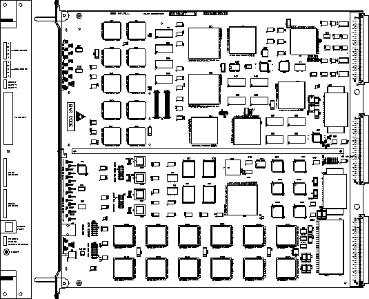
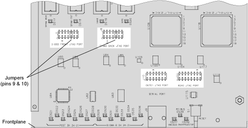

Operating Documentation
Direction 5114043-800, Rev# 9
LightSpeed 3.X Service Methods (Advanced)
Operating Documentation |
| NOTE: | For a scalable, full size version of this illustration, click on the PDF icon below. |
Media File 1: Full Size Illustration: Pegasus Image Generator (PEG-IG) Board

Illustration 1: Pegasus Image Generator (PEG-IG) Board

The Diagnostic LEDs can be visually inspected to assist in monitoring the various functions. Refer to Illustration 1, for LED locations.
DS17, DS18, DS19, and DS20 signify when the Xilinx FPGAs have completed their programming phase and are in application mode. (These should all go “on” about a half-second after power-up or board RESET).
DS12 and DS13 are user programmable via a register located in the UART serial port interface. (Currently not used during Diagnostics)
DS14, DS15, and DS16 indicate power supply status:
DS14 - 5.0 Volt Supply is “up”
DS15 - 2.6 Volt Supply is “up”
DS16 - 1.9 Volt Supply is “up”
DS7-11 are user programmable via the FLAG(3) pin of the ADSP-21060 processor located in SDC-VW Processing Front-end. (These will blink during the “collision test” diagnostic).
DS1, DS2, DS3, DS4, and DS5 are user programmable via the FLAG(3) pin of the ADSP-21060 processor located in SDC-VW Processing Back-end. (These will blink during the “collision test” diagnostic).
DS11 is user programmable via the Timer-1 Out pin of the TMS320C6701 located in Filter Processing. (Currently not used during Diagnostics)
DS21-28 are user programmable via data bits 24-31 of the Post Processor.
Here are the functions of these LEDs during ROM-based diagnostics:
(Top) DS31 - (Unused)
DS30 - (Unused)
DS29 - APU LED. Blinks when the APU diags are running.
DS28 - C67 LED. Blinks when the C67 diags are running.
DS27 - IMAX LED. Blinks when the IMAX diags are running.
DS26 - SPAM1 LED. Blinks when the SPAM1 diags are running.
DS25 - SPAM0 LED. Blinks when the SPAM0 diags are running.
(Bottom) DS24 - VxWorks Heartbeat LED. Blinks when VxWorks is running.
During System tests, DS24 is the heartbeat LED for VxWorks.
DS29-36 are user programmable via data bits 24-31 of the Sigma_B Processor.
Here are the functions of these LEDs during ROM-based diagnostics:
(Top) DS31 - (Unused)
DS30 - (Unused)
DS29 - (Unused)
DS28 - (Unused)
DS27 - (Unused)
DS26 -. (Unused)
DS25 - Dual Port LED. Blinks when the Dual Port Diag is running.
(Bottom) DS24 - VxWorks Heartbeat LED. Blinks when VxWorks is running.
During System tests, DS24 is the heartbeat LED for VxWorks.
DS39 is active whenever the Image Memory's DMA Controller is active. (Blinks during IMAX and APU diagnostics)
DS38 is active whenever PCI data transfers are taking place.
DS37 is active whenever VME data transfers are taking place.
Illustration 2: Pegasus Image Generator (PEG-IG) Board
